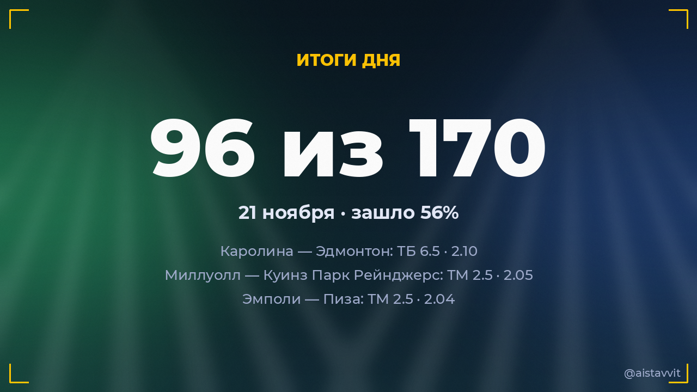

Итоги дня — 21 ноября 2026
Зашло 96 из 170 основных прогнозов (56%), ROI дня -1.3%. Каждый прогноз учтён — и заходы, и промахи.

Все прогнозы дня
🏀 Даллас Маверикс — Клипперс
ТМ 230.5 · 1.89110:100 ✅
ТМ 230.5 · 1.89110:100 ✅
⚽ Куинз Парк — Livingston
ТБ 2.5 · 1.681:4 ✅
ТБ 2.5 · 1.681:4 ✅
⚽ Вест Хэм — Престон Норт Энд
Обе забьют — да · 1.761:1 ✅
Обе забьют — да · 1.761:1 ✅
⚽ Сток Сити — Бирмингем Сити
ТМ 2.5 · 1.701:0 ✅
ТМ 2.5 · 1.701:0 ✅
⚽ Болтон Уондерерс — Портсмут
ТМ 2.5 · 1.921:1 ✅
ТМ 2.5 · 1.921:1 ✅
⚽ Ковентри Сити — Кристал Пэлас
ТБ 2.5 · 1.663:2 ✅
ТБ 2.5 · 1.663:2 ✅
⚽ Килмарнок — Абердин
ТБ 2.5 · 1.662:4 ✅
ТБ 2.5 · 1.662:4 ✅
⚽ Мотеруэлл — Рейнджерс
П2 · 1.541:2 ✅
П2 · 1.541:2 ✅
⚽ Фалкерк — Сент-Джонстон
П1 · 1.802:1 ✅
П1 · 1.802:1 ✅
⚽ Селтик — Сент-Миррен
Обе забьют — да · 1.714:1 ✅
Обе забьют — да · 1.714:1 ✅
⚽ Tenerife — Мальорка
ТМ 2.5 · 1.670:0 ✅
ТМ 2.5 · 1.670:0 ✅
⚽ Реал Мадрид — Сельта
Обе забьют — да · 1.922:1 ✅
Обе забьют — да · 1.922:1 ✅
⚽ Нортгемптон Таун — Рочдейл
П1 · 1.763:2 ✅
П1 · 1.763:2 ✅
⚽ Кроули Таун — Флитвуд Таун
ТБ 2.5 · 1.622:1 ✅
ТБ 2.5 · 1.622:1 ✅
⚽ Честерфилд — Шрусбери Таун
П1 · 1.604:1 ✅
П1 · 1.604:1 ✅
⚽ Витория — Брага
ТМ 2.5 · 1.690:2 ✅
ТМ 2.5 · 1.690:2 ✅
⚽ Аккрингтон Стэнли — Солфорд Сити
ТМ 2.5 · 2.031:1 ✅
ТМ 2.5 · 2.031:1 ✅
⚽ Лейтон Ориент — Уимблдон
П1 · 1.744:1 ✅
П1 · 1.744:1 ✅
⚽ О’Хиггинс — Универсидад де Чили
ТМ 2.5 · 2.000:1 ✅
ТМ 2.5 · 2.000:1 ✅
⚽ Кембридж Юнайтед — Стокпорт Каунти
П2 · 1.840:3 ✅
П2 · 1.840:3 ✅
⚽ Вулверхэмптон — Чарльтон Атлетик
ТБ 2.5 · 1.572:1 ✅
ТБ 2.5 · 1.572:1 ✅
⚽ Шеффилд Юнайтед — Уотфорд
П1 · 1.564:0 ✅
П1 · 1.564:0 ✅
⚽ Эмполи — Пиза
ТМ 2.5 · 2.040:1 ✅
ТМ 2.5 · 2.040:1 ✅
⚽ Тоттенхэм — Ипсвич Таун
П1 · 1.522:0 ✅
П1 · 1.522:0 ✅
⚽ Даллас — Портленд Тимберс
П1 · 1.903:0 ✅
П1 · 1.903:0 ✅
⚽ Тихуана — Atlante
П1 · 1.621:0 ✅
П1 · 1.621:0 ✅
⚽ Бертон Альбион — Лутон Таун
П2 · 1.671:2 ✅
П2 · 1.671:2 ✅
⚽ Оксфорд Юнайтед — Уиком Уондерерс
ТБ 2.5 · 1.674:3 ✅
ТБ 2.5 · 1.674:3 ✅
⚽ Парма — Рома
ТБ 2.5 · 1.511:5 ✅
ТБ 2.5 · 1.511:5 ✅
⚽ Дефенса и Хустисия — Барракас Сентраль
ТМ 2.5 · 1.530:1 ✅
ТМ 2.5 · 1.530:1 ✅
⚽ Данди — Харт оф Мидлотиан
П2 · 2.000:8 ✅
П2 · 2.000:8 ✅
⚽ Фейеноорд — Эксельсиор
Обе забьют — да · 1.722:3 ✅
Обе забьют — да · 1.722:3 ✅
⚽ Севилья — Бетис
ТМ 2.5 · 1.921:1 ✅
ТМ 2.5 · 1.921:1 ✅
⚽ Реймс — Сент-Этьен
ТМ 2.5 · 1.890:1 ✅
ТМ 2.5 · 1.890:1 ✅
🏒 Каролина — Эдмонтон
ТБ 6.5 · 2.107:4 ✅
ТБ 6.5 · 2.107:4 ✅
⚽ Нью-Инглэнд Революшн — Филадельфия Юнион
ТМ 3.5 · 1.512:0 ✅
ТМ 3.5 · 1.512:0 ✅
⚽ Текнико Университарио — Депортиво Куэнка
П1 · 1.952:0 ✅
П1 · 1.952:0 ✅
⚽ Генк — ФК «Ла-Лувьер»
ТБ 2.5 · 1.543:0 ✅
ТБ 2.5 · 1.543:0 ✅
🎾 Александр Зверев — Даниил Медведев
Будет 2 сета · 1.832:0 ✅
Будет 2 сета · 1.832:0 ✅
⚽ GAIS — Вестерос
П1 · 2.023:1 ✅
П1 · 2.023:1 ✅
⚽ Лилль — Олимпик
ТМ 2.5 · 1.750:1 ✅
ТМ 2.5 · 1.750:1 ✅
⚽ Ницца — ПСЖ
П2 и ТБ 1.5 · 1.592:3 ✅
П2 и ТБ 1.5 · 1.592:3 ✅
⚽ St. Pauli — Бохум
П1 · 2.032:0 ✅
П1 · 2.032:0 ✅
🎮 Team Yandex — Natus Vincere
Всухую (2:0 или 0:2) · 1.412:0 ✅
Всухую (2:0 или 0:2) · 1.412:0 ✅
⚽ Палмейрас — Фламенго
ТМ 2.5 · 1.681:1 ✅
ТМ 2.5 · 1.681:1 ✅
⚽ ЛАСК — TSV Hartberg
Обе забьют — да · 1.562:1 ✅
Обе забьют — да · 1.562:1 ✅
⚽ НЕК — ПСВ
П2 · 1.721:4 ✅
П2 · 1.721:4 ✅
⚽ Мехелен — Брюгге
П2 и ТБ 1.5 · 1.531:5 ✅
П2 и ТБ 1.5 · 1.531:5 ✅
⚽ Зюлте-Варегем — Антверпен
ТБ 2.5 · 1.682:2 ✅
ТБ 2.5 · 1.682:2 ✅
⚽ Рэйт Роверс — Партик Тисл
ТМ 2.5 · 1.740:2 ✅
ТМ 2.5 · 1.740:2 ✅
⚽ Монако — Осер
Обе забьют — да · 1.671:1 ✅
Обе забьют — да · 1.671:1 ✅
⚽ Борнмут — Ноттингем Форест
П1 · 1.932:0 ✅
П1 · 1.932:0 ✅
⚽ Линкольн Сити — Рексем
ТМ 2.5 · 1.730:1 ✅
ТМ 2.5 · 1.730:1 ✅
⚽ Стад Лаваль — Монпелье
ТМ 2.5 · 2.001:0 ✅
ТМ 2.5 · 2.001:0 ✅
⚽ Ганновер — Гройтер
П1 · 1.702:1 ✅
П1 · 1.702:1 ✅
🏒 Нэшвилл — Питтсбург
ТБ 6.5 · 1.934:3 ✅
ТБ 6.5 · 1.934:3 ✅
⚽ Ноттс Каунти — Стивенидж
ТМ 2.5 · 1.700:1 ✅
ТМ 2.5 · 1.700:1 ✅
⚽ Шапекоэнсе — Крузейро
П2 · 1.501:2 ✅
П2 · 1.501:2 ✅
🏒 Детройт — Айлендерс
П2 (с ОТ и буллитами) · 1.772:3 ✅
П2 (с ОТ и буллитами) · 1.772:3 ✅
🏒 Монреаль — Филадельфия
ТБ 5.5 · 1.803:4 ✅
ТБ 5.5 · 1.803:4 ✅
⚽ Ньюпорт Каунти — Суиндон Таун
П1 · 1.842:0 ✅
П1 · 1.842:0 ✅
⚽ Норвич Сити — Кардифф Сити
П1 · 1.742:1 ✅
П1 · 1.742:1 ✅
🏒 Бостон — Вашингтон
ТБ 6.5 · 1.827:5 ✅
ТБ 6.5 · 1.827:5 ✅
⚽ Миллуолл — Куинз Парк Рейнджерс
ТМ 2.5 · 2.050:1 ✅
ТМ 2.5 · 2.050:1 ✅
🏒 Торонто — Коламбус
П2 (с ОТ и буллитами) · 1.983:4 ✅
П2 (с ОТ и буллитами) · 1.983:4 ✅
⚽ Вольфсбург — Хольштайн Киль
П1 · 1.673:0 ✅
П1 · 1.673:0 ✅
🏒 Оттава — Лос-Анджелес
ТБ 5.5 · 1.894:2 ✅
ТБ 5.5 · 1.894:2 ✅
🏒 Флорида — Баффало
ТБ 6.5 · 2.024:3 ✅
ТБ 6.5 · 2.024:3 ✅
🎮 LGD Gaming — 1w Team
Всухую (2:0 или 0:2) · 1.810:2 ✅
Всухую (2:0 или 0:2) · 1.810:2 ✅
⚽ Генчлербирлиги — Газиантеп
ТМ 2.5 · 2.021:0 ✅
ТМ 2.5 · 2.021:0 ✅
⚽ Сентрал Кост Маринерс — Перт Глори
ТМ 3.5 · 1.560:0 ✅
ТМ 3.5 · 1.560:0 ✅
⚽ Кавасаки Фронтале — Ависпа Фукуока
П1 · 1.881:0 ✅
П1 · 1.881:0 ✅
⚽ Сересо Осака — Токио
П2 · 1.650:3 ✅
П2 · 1.650:3 ✅
🏒 Виннипег — Вегас
П2 (с ОТ и буллитами) · 1.744:5 ✅
П2 (с ОТ и буллитами) · 1.744:5 ✅
⚽ Санфречче Хиросима — Иокогама Ф. Маринос
Обе забьют — да · 1.592:2 ✅
Обе забьют — да · 1.592:2 ✅
⚽ Онсе Кальдас — Атлетико Насьональ
ТМ 2.5 · 1.770:0 ✅
ТМ 2.5 · 1.770:0 ✅
⚽ Окленд — Мельбурн Виктори
ТМ 2.5 · 2.001:1 ✅
ТМ 2.5 · 2.001:1 ✅
🏀 Сан-Антонио Сперс — Нью-Орлеан Пеликанс
ТМ 229.5 · 1.89114:91 ✅
ТМ 229.5 · 1.89114:91 ✅
🏀 Лейкерс — Сакраменто Кингз
ТМ 229.5 · 1.87106:104 ✅
ТМ 229.5 · 1.87106:104 ✅
⚽ Галатасарай — Самсунспор
Обе забьют — да · 1.662:1 ✅
Обе забьют — да · 1.662:1 ✅
⚽ Grazer AK — Рапид
П2 и ТБ 1.5 · 1.610:3 ✅
П2 и ТБ 1.5 · 1.610:3 ✅
⚽ Пачука — Толука
ТМ 3.5 · 1.682:0 ✅
ТМ 3.5 · 1.682:0 ✅
⚽ Модена — Юве Стабия
П1 · 1.562:0 ✅
П1 · 1.562:0 ✅
⚽ Атлетико Минейро — Бока Хуниорс
ТБ 1.5 · 1.530:2 ✅
ТБ 1.5 · 1.530:2 ✅
⚽ Зюйдтироль — Кремонезе
ТМ 2.5 · 1.651:0 ✅
ТМ 2.5 · 1.651:0 ✅
⚽ Мьельбю — Русенгорд
Обе забьют — да · 1.641:1 ✅
Обе забьют — да · 1.641:1 ✅
🎮 Team Nemesis — GamerLegion
Всухую (2:0 или 0:2) · 1.860:2 ✅
Всухую (2:0 или 0:2) · 1.860:2 ✅
⚽ Сантос — Леон
ТБ 2.5 · 1.521:2 ✅
ТБ 2.5 · 1.521:2 ✅
🎾 Гуйомар Маристани — Ребека Масарова
Будет 2 сета · 1.760:2 ✅
Будет 2 сета · 1.760:2 ✅
⚽ Боруссия М — Боруссия Д
П2 · 1.560:1 ✅
П2 · 1.560:1 ✅
⚽ Каррарезе — Виртус Энтелла
ТМ 2.5 · 1.661:0 ✅
ТМ 2.5 · 1.661:0 ✅
⚽ Эльферсберг — Фрайбург
П2 · 1.970:1 ✅
П2 · 1.970:1 ✅
⚽ Лацио — Лечче
ТБ 2.5 · 1.553:0 ✅
ТБ 2.5 · 1.553:0 ✅
⚽ Унион Берлин — РБ Лейпциг
П2 и ТБ 1.5 · 1.661:5 ✅
П2 и ТБ 1.5 · 1.661:5 ✅
⚽ CD Sabadell — Granada
ТМ 2.5 · 1.581:1 ✅
ТМ 2.5 · 1.581:1 ✅
🏒 Калгари — Чикаго
ТБ 5.5 · 1.803:4 ✅
ТБ 5.5 · 1.803:4 ✅
⚽ УНАМ Пумас — Монтеррей
Обе забьют — да · 1.530:2 ❌
Обе забьют — да · 1.530:2 ❌
⚽ Universidad Católica (Quito) — Barcelona SC
П1 · 1.650:1 ❌
П1 · 1.650:1 ❌
🏀 Миннесота Тимбервулвз — Мемфис Гриззлис
ТБ 228.5 · 1.91104:95 ❌
ТБ 228.5 · 1.91104:95 ❌
🏀 Филадельфия Сиксерс — Милуоки Бакс
Ф1 (-10.5) · 1.93132:129 ❌
Ф1 (-10.5) · 1.93132:129 ❌
🎾 Лейре Ромеро Гормас — Лючия Бронцетти
Будет 2 сета · 1.822:1 ❌
Будет 2 сета · 1.822:1 ❌
⚽ Гронинген — Херенвен
ТМ 3.5 · 1.671:3 ❌
ТМ 3.5 · 1.671:3 ❌
🏀 Нью-Йорк Никс — Портленд
Ф2 (-1.5) · 1.9597:96 ❌
Ф2 (-1.5) · 1.9597:96 ❌
⚽ Баия — Коритиба
П1 · 1.530:1 ❌
П1 · 1.530:1 ❌
⚽ Telstar — Зволле
П1 · 2.061:3 ❌
П1 · 2.061:3 ❌
⚽ Наполи — Торино
ТБ 2.5 · 1.661:0 ❌
ТБ 2.5 · 1.661:0 ❌
⚽ Alianza Lima — FC Cajamarca
ТМ 3.5 · 1.615:0 ❌
ТМ 3.5 · 1.615:0 ❌
⚽ Ланс — Тулуза
П1 · 1.851:1 ❌
П1 · 1.851:1 ❌
⚽ Архентинос Хуниорс — Индепендьенте
П1 · 2.121:2 ❌
П1 · 2.121:2 ❌
🏒 Сент-Луис — Нью-Джерси
П2 (с ОТ и буллитами) · 1.659:6 ❌
П2 (с ОТ и буллитами) · 1.659:6 ❌
⚽ Интер Майами — Коламбус Крю
П1 · 1.580:3 ❌
П1 · 1.580:3 ❌
⚽ Универсидад де Консепсьон — Ньюбленсе
ТМ 2.5 · 1.692:3 ❌
ТМ 2.5 · 1.692:3 ❌
⚽ Пунтаренас — Эредиано
ТМ 2.5 · 1.872:1 ❌
ТМ 2.5 · 1.872:1 ❌
⚽ Страсбур — Brest
ТБ 2.5 · 1.620:1 ❌
ТБ 2.5 · 1.620:1 ❌
🎮 Team Spirit — Xtreme Gaming
Всухую (2:0 или 0:2) · 1.441:2 ❌
Всухую (2:0 или 0:2) · 1.441:2 ❌
⚽ Хуарес — Атлас
П2 · 2.053:3 ❌
П2 · 2.053:3 ❌
⚽ Утрехт — Камбюр
П1 · 1.902:3 ❌
П1 · 1.902:3 ❌
🎮 Aurora — Astra Invicta
Всухую (2:0 или 0:2) · 1.732:1 ❌
Всухую (2:0 или 0:2) · 1.732:1 ❌
⚽ Мидлсбро — Бристоль Сити
ТБ 2.5 · 1.502:0 ❌
ТБ 2.5 · 1.502:0 ❌
⚽ Eintracht Frankfurt — Хоффенхайм
ИТ1 больше 1.5 · 1.671:0 ❌
ИТ1 больше 1.5 · 1.671:0 ❌
⚽ Байер — Падерборн 07
Обе забьют — да · 1.614:0 ❌
Обе забьют — да · 1.614:0 ❌
⚽ Асколи — Виченца
П1 · 1.752:2 ❌
П1 · 1.752:2 ❌
⚽ Комо — Кальяри
ТБ 2.5 · 1.512:0 ❌
ТБ 2.5 · 1.512:0 ❌
⚽ Сампдория — Беневенто
ТМ 2.5 · 1.733:1 ❌
ТМ 2.5 · 1.733:1 ❌
⚽ АИК — Дегерфорс
ИТ1 больше 1.5 · 1.630:0 ❌
ИТ1 больше 1.5 · 1.630:0 ❌
🎾 Карлос Алькарас — Бен Шелтон
Будет 2 сета · 1.602:1 ❌
Будет 2 сета · 1.602:1 ❌
⚽ Тромсё — Викинг
П2 · 1.803:2 ❌
П2 · 1.803:2 ❌
⚽ Алавес — Депортиво Ла-Корунья
ТМ 2.5 · 1.563:1 ❌
ТМ 2.5 · 1.563:1 ❌
⚽ Амедспор — Кайкур Ризеспор
П1 · 1.680:2 ❌
П1 · 1.680:2 ❌
⚽ Джиллингем — Кру Александра
ТМ 2.5 · 1.813:3 ❌
ТМ 2.5 · 1.813:3 ❌
🎮 PlayTime — OG
Всухую (2:0 или 0:2) · 1.711:2 ❌
Всухую (2:0 или 0:2) · 1.711:2 ❌
⚽ Рединг — Бромли
П1 и ТБ 1.5 · 1.550:1 ❌
П1 и ТБ 1.5 · 1.550:1 ❌
⚽ Саутгемптон — Дерби Каунти
ТБ 2.5 · 1.522:0 ❌
ТБ 2.5 · 1.522:0 ❌
⚽ Блэкпул — Уиган
ТМ 2.5 · 2.071:2 ❌
ТМ 2.5 · 2.071:2 ❌
⚽ Манчестер Сити — Фулхэм
П1 и ТБ 1.5 · 1.541:1 ❌
П1 и ТБ 1.5 · 1.541:1 ❌
⚽ Нюрнберг — TSV Eintracht Braunschweig
П1 · 1.671:2 ❌
П1 · 1.671:2 ❌
⚽ Брисбен Роар — Сидней
ТБ 2.5 · 1.670:0 ❌
ТБ 2.5 · 1.670:0 ❌
⚽ Гамба Осака — Фаджиано Окаяма
Обе забьют — да · 1.670:1 ❌
Обе забьют — да · 1.670:1 ❌
⚽ Киото Санга — Урава Ред Даймондс
П2 · 2.102:1 ❌
П2 · 2.102:1 ❌
⚽ Матида Зельвия — В-Варен Нагасаки
П1 · 1.540:0 ❌
П1 · 1.540:0 ❌
⚽ Токио Верди — Нагоя Грампус
Обе забьют — да · 1.740:0 ❌
Обе забьют — да · 1.740:0 ❌
🏀 Денвер Наггетс — Хьюстон Рокетс
Ф2 (-1.5) · 1.91133:124 ❌
Ф2 (-1.5) · 1.91133:124 ❌
⚽ Арброт — Стенхаусмюир
ТМ 2.5 · 1.632:1 ❌
ТМ 2.5 · 1.632:1 ❌
⚽ Астон Вилла — Сандерленд
П1 · 1.760:0 ❌
П1 · 1.760:0 ❌
⚽ Хаддерсфилд Таун — Лестер Сити
П1 · 1.960:1 ❌
П1 · 1.960:1 ❌
⚽ Мансфилд Таун — Милтон Кинс Донс
ТБ 2.5 · 1.601:1 ❌
ТБ 2.5 · 1.601:1 ❌
⚽ Каламата — АЕК
ТБ 2.5 · 1.530:1 ❌
ТБ 2.5 · 1.530:1 ❌
⚽ Castellón — Eldense
ТБ 2.5 · 1.532:0 ❌
ТБ 2.5 · 1.532:0 ❌
⚽ Ньюкасл — Арсенал
П2 · 1.572:2 ❌
П2 · 1.572:2 ❌
⚽ Шальке 04 — Штутгарт
П2 · 1.790:0 ❌
П2 · 1.790:0 ❌
⚽ Волеренга — Старт
П1 · 1.531:2 ❌
П1 · 1.531:2 ❌
⚽ Катандзаро — Палермо
П2 · 1.713:1 ❌
П2 · 1.713:1 ❌
⚽ Коджаэлиспор — Фенербахче
П2 · 1.522:2 ❌
П2 · 1.522:2 ❌
⚽ Тироль — Аустрия
П1 · 1.730:1 ❌
П1 · 1.730:1 ❌
⚽ Райо Вальекано — Валенсия
П1 · 1.910:1 ❌
П1 · 1.910:1 ❌
⚽ Real Sociedad II — Cádiz
П1 · 1.920:3 ❌
П1 · 1.920:3 ❌
⚽ Кокимбо Унидо — Everton CD
ТМ 2.5 · 2.002:1 ❌
ТМ 2.5 · 2.002:1 ❌
⚽ Шарлеруа — Сент-Трюйден
П1 · 1.982:2 ❌
П1 · 1.982:2 ❌
⚽ Барнет — Порт Вейл
ТМ 2.5 · 2.012:1 ❌
ТМ 2.5 · 2.012:1 ❌
⚽ Суонси Сити — Вест Бромвич Альбион
ТМ 2.5 · 1.802:2 ❌
ТМ 2.5 · 1.802:2 ❌
⚽ Челси — Лидс Юнайтед
П1 · 1.871:4 ❌
П1 · 1.871:4 ❌
⚽ Hamarkameratene — Fredrikstad
Обе забьют — да · 1.670:0 ❌
Обе забьют — да · 1.670:0 ❌
⚽ Хайберниан — Данди Юнайтед
П1 · 1.950:4 ❌
П1 · 1.950:4 ❌
⚽ Йорк Сити — Уолсолл
П1 · 1.810:0 ❌
П1 · 1.810:0 ❌
⚽ Транмир Роверс — Колчестер Юнайтед
ТМ 2.5 · 1.892:1 ❌
ТМ 2.5 · 1.892:1 ❌
⚽ Олдем Атлетик — Эксетер Сити
П1 · 2.001:1 ❌
П1 · 2.001:1 ❌
⚽ Гримсби Таун — Ротерхэм Юнайтед
П1 · 1.550:0 ❌
П1 · 1.550:0 ❌
⚽ Челтнем Таун — Бристоль Роверс
ТМ 2.5 · 2.050:3 ❌
ТМ 2.5 · 2.050:3 ❌
⚽ Плимут Аргайл — Питерборо
П1 · 1.770:2 ❌
П1 · 1.770:2 ❌
⚽ Брэдфорд Сити — Донкастер
П1 · 1.642:2 ❌
П1 · 1.642:2 ❌
← предыдущий день · статистика бота · прогнозы на сегодня · Telegram-канал